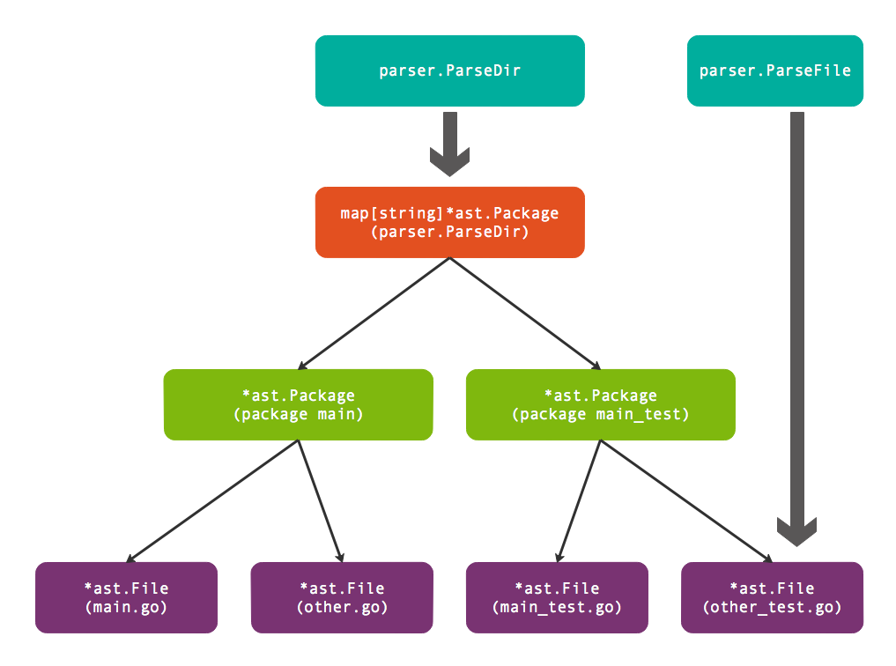
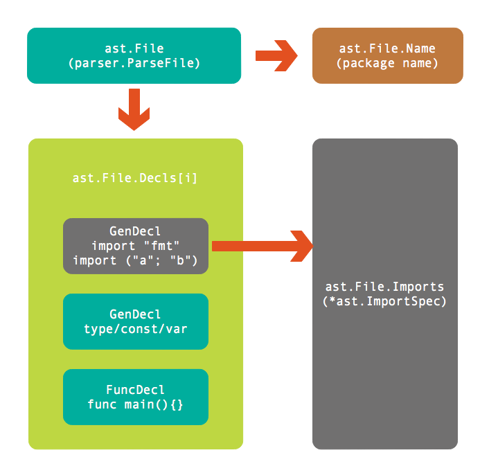
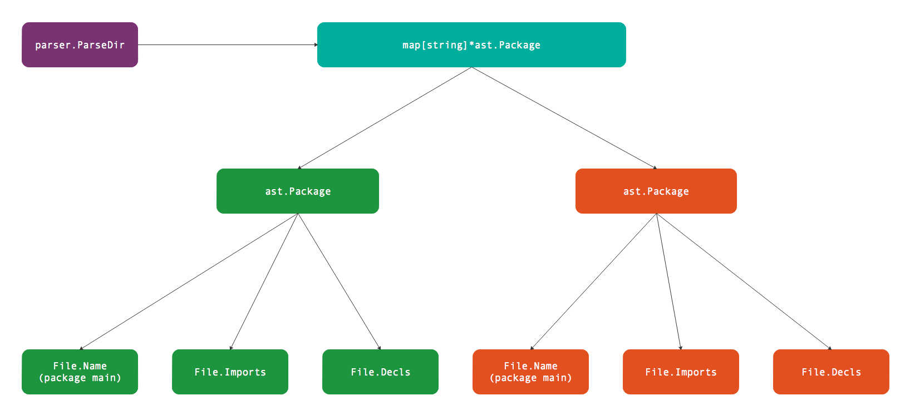
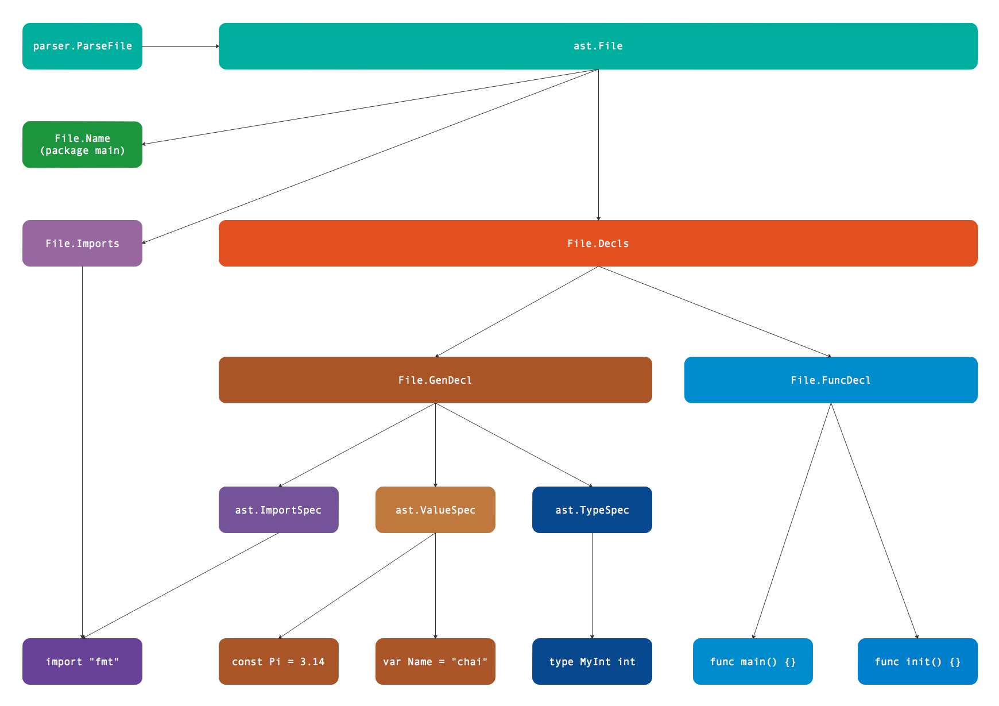

- 凹语言(Go实现, 面向WASM设计): https://github.com/wa-lang/wa
- WaBook(Go语言实现的MD电子书构建工具): https://github.com/wa-lang/wabook
第4章 代码结构
前文我们已经简单了解如何解析单个表达式。但是Go语言的表达式不是独立存在的语法结构，如果我们希望通过表达式和赋值语句来更新上下文环境，那么就需要将表达式放到Go语言源文件环境进行解析。Go语言的代码结构主要分为三个层面：目录结构、目录内部的包结构、文件内部的代码结构。标准库的go/parser包只提供了目录和文件解析的函数，因此我们主要从这两个函数学习和语法树相关的代码结构。
4.1 目录结构
Go语言代码根据目录组织，一个包由多个文件组织，文件必须属于同一个目录下。不过包的单元测试虽然也和包的普通代码文件属于同一个目录，但是测试代码可以属于一个独立的测试包（独立的测试包名是以_test为后缀）。标准库go/parser包中的parser.ParseDir用于解析目录内的全部Go语言文件，返回的map[string]*ast.Package包含多个包信息。而parser.ParseFile用于解析单个文件，返回的*ast.File包含文件内部代码信息。而每个*ast.Package正是由多个*ast.File文件组成。它们直接的逻辑关系如下图所示：

图中展示的测试包由main.go、other.go、main_test.go、other_test.go四个文件组成，其中main.go、other.go两个文件属于package main包，而main_test.go、other_test.go两个文件属于package main_test测试包。因此parser.ParseDir解析出两个包，每个包中各有两个文件。当然，我们也可以针对每个文件手工调用parser.ParseFile函数进行解析，然后根据包的名字输出类似parser.ParseDir的结果。
因为parser.ParseDir的实际的代码实现也是由parser.ParseFile函数简单包装而来，因此我们只要简单了解目录结构即可，文件内部的代码结构才是Go语法树解析的难点和要点。
4.2 文件结构
Go语言是一个精心设计的语言，语法非常利于理解和解析。一个Go语言文件中，顶级的语法元素只有package、import、type、const、var和func这几种。每个文件的语法规范定义如下：
SourceFile = PackageClause ";" { ImportDecl ";" } { TopLevelDecl ";" } .
PackageClause = "package" PackageName .
PackageName = identifier .
ImportDecl = "import" ( ImportSpec | "(" { ImportSpec ";" } ")" ) .
ImportSpec = [ "." | PackageName ] ImportPath .
ImportPath = string_lit .
TopLevelDecl = Declaration | FunctionDecl | MethodDecl .
Declaration = ConstDecl | TypeDecl | VarDecl .
SourceFile表示一个Go源文件，由PackageClause表示的包定义、ImportDecl表示的导入声明和TopLevelDecl表示的顶级声明三个部分组成。其中TopLevelDecl又由通用声明、函数声明和方法声明组成，通用声明再分为常量、类型和变量声明。
以下代码是一个Go源文件的例子：
package pkgname
import ("a", "b")
type SomeType int
const PI = 3.14
var Length = 1
func main() {}
只要通过每行开头的不同关键字就可以明确属于哪种声明类型。使用go/parser包的parser.ParseFile函数就可以对上面的代码进行解析：
func main() {
fset := token.NewFileSet()
f, err := parser.ParseFile(fset, "hello.go", src, parser.AllErrors)
if err != nil {
fmt.Println(err)
return
}
...
}
const src = `package pkgname
import ("a"; "b")
type SomeType int
const PI = 3.14
var Length = 1
func main() {}
`
parser.ParseFile函数返回的是*ast.File类型的结构体：
type File struct {
Doc *CommentGroup // associated documentation; or nil
Package token.Pos // position of "package" keyword
Name *Ident // package name
Decls []Decl // top-level declarations; or nil
Scope *Scope // package scope (this file only)
Imports []*ImportSpec // imports in this file
Unresolved []*Ident // unresolved identifiers in this file
Comments []*CommentGroup // list of all comments in the source file
}
结构体的File.Name成员表示文件对应包的名字，然后是File.Imports表示当前文件导入的第三方的包信息。因此通过以下代码就可以输出当前包名和导入包名字：
fmt.Println("package:", f.Name)
for _, s := range f.Imports {
fmt.Println("import:", s.Path.Value)
}
// Output:
// package: pkgname
// import: "a"
// import: "b"
但是结构体中最重要的其实是File.Decls成员，它包含了当前文件全部的包级声明信息（包含导入信息）。即使没有File.Imports成员，我们也可以从File.Decls声明列表中获取全部导入包的信息。
通过以下的代码可以查看File.Decls每个成员的类型信息：
for _, decl := range f.Decls {
fmt.Printf("decl: %T\n", decl)
}
// Output:
// decl: *ast.GenDecl
// decl: *ast.GenDecl
// decl: *ast.GenDecl
// decl: *ast.GenDecl
// decl: *ast.FuncDecl
分析输出结构可以发现前四个都是*ast.GenDecl类型，只有最后一个是*ast.FuncDecl类型。因此可以推测，import、type、const和var都是对应*ast.GenDecl类型，只有函数是独立的*ast.FuncDecl类型。
因此我们也可以从f.Decls列表中获取导入包的信息：
for _, v := range f.Decls {
if s, ok := v.(*ast.GenDecl); ok && s.Tok == token.IMPORT {
for _, v := range s.Specs {
fmt.Println("import:", v.(*ast.ImportSpec).Path.Value)
}
}
}
在遍历f.Decls列表时，首先判断是否为*ast.GenDecl类型，如果是并且s.Tok是token.IMPORT类型则表示是导入的声明。这样我们就可以将s.Specs列表的每个元素作为*ast.ImportSpec类型进行输出。
下图是ast.File结构体对应的代码结构：

首先通过parser.ParseFile解析文件得到*ast.File类型的结构体。*ast.File结构体中Name包含了包名信息，Decls包含了全部的声明信息（声明分别对应ast.GenDecl和ast.FuncDecl两种类型），以及导入信息。
4.3 诊断语法树
go/ast包为语法树提供了ast.Print函数专门打印语法树：
$ go doc ast.Print
package ast // import "go/ast"
func Print(fset *token.FileSet, x interface{}) error
Print prints x to standard output, skipping nil fields. Print(fset, x) is
the same as Fprint(os.Stdout, fset, x, NotNilFilter).
这是学习和调试语法树最重要的函数，通过其输出我们可以对语法树有一个直观的印象，从而为进一步分析处理语法树奠定基础。从ast.Print函数文档可以看出，它是ast.Fprint函数的再次包装（类似fmt.Print和fmt.Fprint函数的关系），这样我们不仅仅可以定义输出的目标，还可以通过过滤函数来控制要输出的内容。
此外通过ast.Walk可以遍历整个语法树（和filepath.Walk遍历目录的思想类似）：
type myNodeVisitor struct {}
func (p *myNodeVisitor) Visit(n ast.Node) (w ast.Visitor) {
if x, ok := n.(*ast.Ident); ok {
fmt.Println("myNodeVisitor.Visit:", x.Name)
}
return p
}
func main() {
fset := token.NewFileSet()
f, err := parser.ParseFile(fset, "hello.go", src, parser.AllErrors)
if err != nil {
log.Fatal(err)
return
}
ast.Walk(new(myNodeVisitor), f)
}
const src = `...` // 和前面的内容相同
首先定义一个新的myNodeVisitor类型以满足ast.Visitor接口，然后在myNodeVisitor.Visit方法输出标识符类型的名字，最后通过ast.Walk遍历整个语法树。
输出结果如下：
myNodeVisitor.Visit: pkgname
myNodeVisitor.Visit: SomeType
myNodeVisitor.Visit: int
myNodeVisitor.Visit: PI
myNodeVisitor.Visit: Length
myNodeVisitor.Visit: main
当然，我们也可以通过ast.Inspect函数实现同样的功能：
ast.Inspect(f, func(n ast.Node) bool {
if x, ok := n.(*ast.Ident); ok {
fmt.Println("ast.Inspect", x.Name)
}
return true
})
所以说，语法树的很多处理原理是相通的，ast.Inspect函数只是ast.Walk更简化版的包装而已。有了语法树之后，对import进行花样排序就变成了对File.Decls列表元素的处理问题。
4.4 总结
parser.ParseDir解析目录结构返回包含多个包的map，返回包的总体逻辑关系如下图所示：

多个包可以构成完整的可执行程序。每个包内部通过文件组织代码的导入和声明语句。而单个文件可以由parser.ParseFile完成解析，文件内部的逻辑关系如下图：

首先是包的名字，然后是导入的依赖包列表，最后是类型、常量、变量和函数等声明列表。而文件内部的声明列表是最复杂也是最重要的部分，其更详细的逻辑结构如下图：

声明部分包含基础声明和函数声明。基础声明包含导入声明、类型声明、常量声明和变量声明，它们可以独立声明，也可以按组方式声明，其中常量和变量的声明采用相同的结构表示。而函数声明不支持按组方式声明，函数声明主要包含接收者、函数参数和返回值组成的函数类型，以及函数的代码实现等信息。